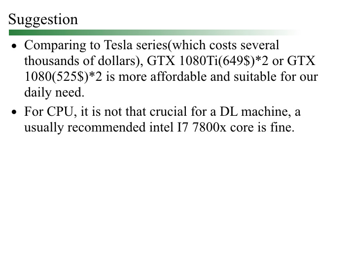

Linux系统GPU服务器选择调研
主要方向
-
自行组装一台GPU Linux机器。网上许多教程都是教人如何DIY的。这种方案的优点是不但便宜不少，而且还可以从中学习到很多相关知识，如果您有这个需求，并且也有时间、想学习相关内容，或是对价格比较敏感，DIY是一个相对较好的选择。但是缺点也是存在的。首先是售后服务问题，一旦机器出了故障，维修可能会相对比较麻烦，尤其是在您自身也对此不是很专业的情况下。另外是自行DIY可能会产生搭配不合理的问题，比如选用了散热性能不足的器材、最大功率不足的电源等，这些都会为您未来的使用带来隐患。
-
在各大购物网站上购买组装完成的“深度学习机器”。这种机器的缺点是贵，优点是真心方便而且相对来说会更有保障。尤其是在比较负责的平台上购买的机器可以得到贴心的售后服务，而且机子的各个部分都经过专业人士的挑选，质量相对有保障，不会轻易发生电源线起火、散热不足导致GPU故障等问题（相对的）。另外值得一提的是，现在市面上卖的“深度学习机器”往往还预装好了Linux系统和诸如TensorFlow、Pytorch等主流框架、Anaconda以及CUDA等驱动。如果您所在的团队中没有对机器配置十分了解的成员，并不愿意花费这个时间成本去学习相关知识，这种现成的专用机其实是一个很好的选择。
参考来源
这篇博客中我不会自行详细分析如何组装，而是一篇调研，所以会附上我参考过的各个信息源，并在文末贴出英文PPT。
- 深度学习攒机小记 by nicholas
- 深度学习主机攒机小记
- 深度学习主机环境配置: Ubuntu16.04+GeForce GTX 1080+TensorFlow
- 如何配置一台适用于深度学习的工作站
- Deep Learning GPUs 详细对比表格
- GPU集群折腾手记——2015
- 给你一份配置清单:机器学习、深度学习电脑显卡配置指南
- 深度学习（TensorFlow）环境搭建：（一）硬件选购和主机组装
- 从零开始搭建深度学习服务器: 基础环境配置（Ubuntu + GTX 1080 TI + CUDA + cuDNN）
阶段性结论
通过参考以上各博文，以及在一些实际购物网站的调查，大致可以得出以下的结论：对于一个小型团队，或是团队中做深度学习的成员较少时，当前购买双路GTX 1080Ti，搭配Intel Core i7 7800X/7900X 是一个理想的选择。如果不想花费太多时间，或是想马上部署并展开应用的团队，在京东/淘宝（国内）亚马逊（美国）等处购买整机也是一个不错的选择。
PPT细节


